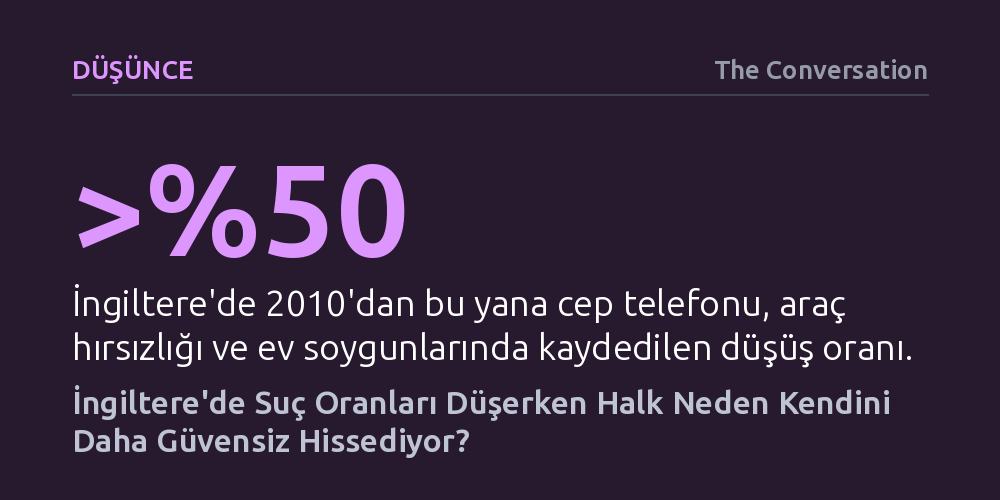

DUSUNCE · The Conversation · 2026-09-07
İngiltere'de hırsızlık ve cinayet oranları 2010'dan beri hızla düşerken halkın yüzde 80'inden fazlası suçun arttığını savunuyor. Yeni araştırma, bu yanılgının temelinde olumsuzluk yanlısı insan psikolojisi, medyanın korku dili ve kutuplaşan siyasi kimliklerin yattığını gösteriyor.
Toplumdaki güvenlik kaygılarının resmi suç verilerinden ziyade siyasi aidiyetler ve duygusal önyargılarla beslendiğini göstererek kamuoyundaki yaygın kabullere eleştirel yaklaşmayı sağlıyor.

İngiltere'de siyasetçiler ve sokaktaki insanlar asayişin beş ya da on yıl öncesine kıyasla belirgin şekilde kötüye gittiğini sıklıkla öne sürüyor. Kamuoyu yoklamaları da İngiliz halkının yüzde 80'inden fazlasının son yıllarda suç oranlarının tırmandığına samimiyetle inandığını gösteriyor. Ancak bağımsız ve resmi suç kayıtları derinlemesine incelendiğinde, kamuoyundaki bu yaygın hissiyatın gerçeklerle taban tabana zıt olduğu açıkça görülüyor.
Resmi suç verileri, İngiltere ve Galler genelinde suç oranlarının birçok alanda tarihi dip seviyelere indiğini belgeliyor. İngiltere ve Galler Suç Araştırması bulgularına göre 2010 yılından bu yana cep telefonu hırsızlığı, araç hırsızlığı ve ev soygunu gibi gündelik yaşamı doğrudan tedirgin eden suç türleri yüzde 50'den fazla azalmış durumda. Ne var ki toplumun her on ferdinden sekizi telefon hırsızlığının, yaklaşık altısı ise ev ve araç soygunlarının arttığını zannediyor.
Algıdaki bu sapma yalnızca küçük hırsızlıklarla da sınırlı değil. Tartışmaya yer bırakmayacak biçimde polisin adli kayıtlarına dayanan cinayet istatistikleri, 2010'dan bu yana cinayet oranlarının yüzde 20 gerilediğini ortaya koyuyor. Buna rağmen toplumun üçte ikisi cinayetlerin arttığını ya da en iyi ihtimalle sabit kaldığını düşünüyor. Benzer bir çarpıklık güvenlik güçlerinin sayısında da görülüyor: 2018'den beri polis memuru mevcudu yüzde 20 artırılmışken, toplumun üçte ikisi polis sayısının azaldığını sanıyor; gerçeği doğru bilenlerin oranı ise sadece yüzde 4'te kalıyor.
Veriler bu kadar açıkken toplumun ezici çoğunluğunun bu denli yanılmasının ardında iki temel mekanizma bulunuyor: İnsan zihninin çalışma prensibi ve kitlelere dışarıdan ne anlatıldığı. İnsan türü evrimsel olarak tehlike ve tehdit içeren uyarılara odaklanmaya, olumsuz gelişmeleri önceliklendirmeye programlıdır. Bu durum vahşi doğada hayatta kalmayı kolaylaştırsa da modern çağda istatistiksel olasılıkları ve riskleri rasyonel biçimde değerlendirmeyi engelliyor.
Medya kuruluşları, sosyal medya platformları ve siyasetçiler ise bu bilişsel zaafın gayet farkında hareket ediyor. Korku ve öfke uyandıran sansasyonel haberler çok daha yüksek etkileşim ve izlenme alıyor. Haber bültenleri ve dijital algoritmalar münferit ve aşırı suç vakalarını sürekli dolaşıma sokarak kitleleri diri tutarken, suçun genel olarak azaldığı gerçeği dramatik bulunmadığı için tamamen görünmez kılınıyor. Neticede beynimizin tehdit algısı ile medyanın korku pompalaması birbirini besleyen dev bir yanılsama döngüsü kuruyor.
Algıdaki bu çarpılma, konu göçmenlik veya ceza adaleti gibi hassas siyasi başlıklara temas ettiğinde katlanarak derinleşiyor. İnsanlar suç hakkındaki yargılarını istatistikleri inceleyerek değil, kimliklerini ve duygusal aidiyetlerini dışa vuran sinyaller üreterek oluşturuyor. Örneğin cinsel suçlardan hüküm giyen ya da adli uyarı alan kişilerin gerçekte yalnızca yüzde 15'i yabancı uyrukluyken, kamuoyu bu oranın yüzde 30 olduğunu tahmin ediyor. Göç karşıtı Reform UK partisinin seçmenlerinde ise bu tahmin yüzde 50'ye kadar tırmanıyor.
Toplumdaki siyasi kutuplaşma arttıkça, adalet mekanizmasına dair kanaatler de tamamen ideolojik kamplara göre bölünüyor. Reform UK destekçilerinin yüzde 72'si azınlıklara mahkemelerde daha hafif cezalar verildiğini iddia ederken, Yeşiller Partisi seçmenlerinin yalnızca yüzde 5'i bu iddiaya katılıyor. Aksine, Yeşiller destekçilerinin yüzde 51'i azınlıkların çok daha ağır cezalara çarptırıldığını savunuyor. Bireyler artık yalnızca siyasi görüş ayrılığı yaşamıyor; kendi inançlarına uyan iddiaları gerçek kabul edip aksi yöndeki tüm resmi verileri şaibeli ilan ederek tamamen farklı gerçeklik evrenlerinde yaşıyor.
Suç algısının gerçeklikten bu denli kopmasının bireysel ve toplumsal faturası oldukça ağır. Kriminologlar suç korkusunu ikiye ayırıyor: İnsanın kapısını kilitlemesi veya riskli yerlerden kaçınması gibi makul tedbirler almasını sağlayan işlevsel korku ile hayat kalitesini tüketen işlevsiz korku. Gerçek bir tehdide dayanmayan işlevsiz korku; bireylerin gündelik hayatlarını kısıtlamasına, sürekli anksiyete yaşamasına ve ruhsal sağlıklarının bozulmasına yol açıyor.
Aslında halkın suç oranları konusundaki bilgisizliği yeni bir durum değil. 2010 yılında da toplumun yüzde 80'i suçun arttığını düşünüyordu ve hatta 1950'lerdeki araştırmalar da toplumun bugünkünden daha bilgili olmadığını belgeliyordu. Ancak günümüzü geçmişten ayıran asıl tehlike, insanların sadece yanılması değil; kendi benimsedikleri gerçekliğin mutlak doğru olduğuna ve karşı tarafın kasten yalan söylediğine inanmalarıdır.
Yazarın The Perils of Perception adlı çalışmasında dikkat çektiği üzere asıl kayıp, ortak bir hakikat zemininin yok olmasıdır: "Herkes suç hakkında kendi görüşüne sahip olabilir ama kimse kendi olgularına sahip olma hakkına sahip değildir." Olgular üzerinde dahi uzlaşılamayan bir iklimde ne rasyonel bir adalet politikası yürütülebilir ne de sağlıklı bir toplumsal diyalog kurulabilir.